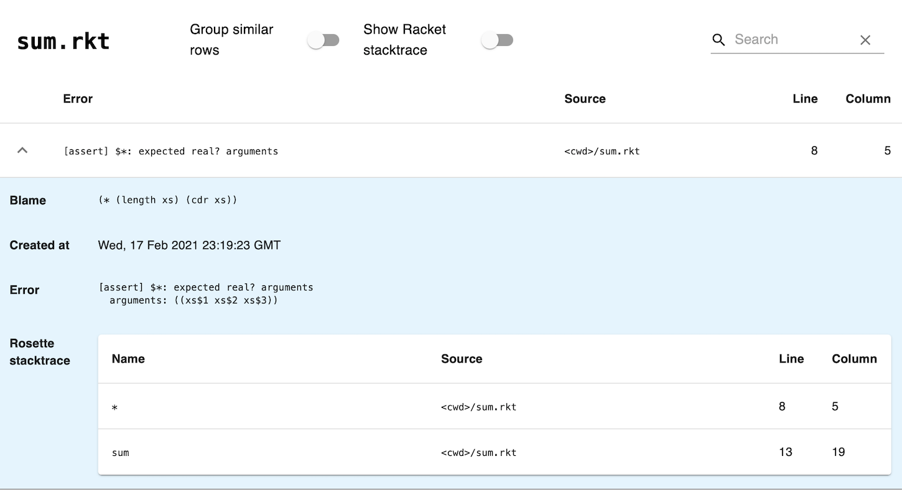
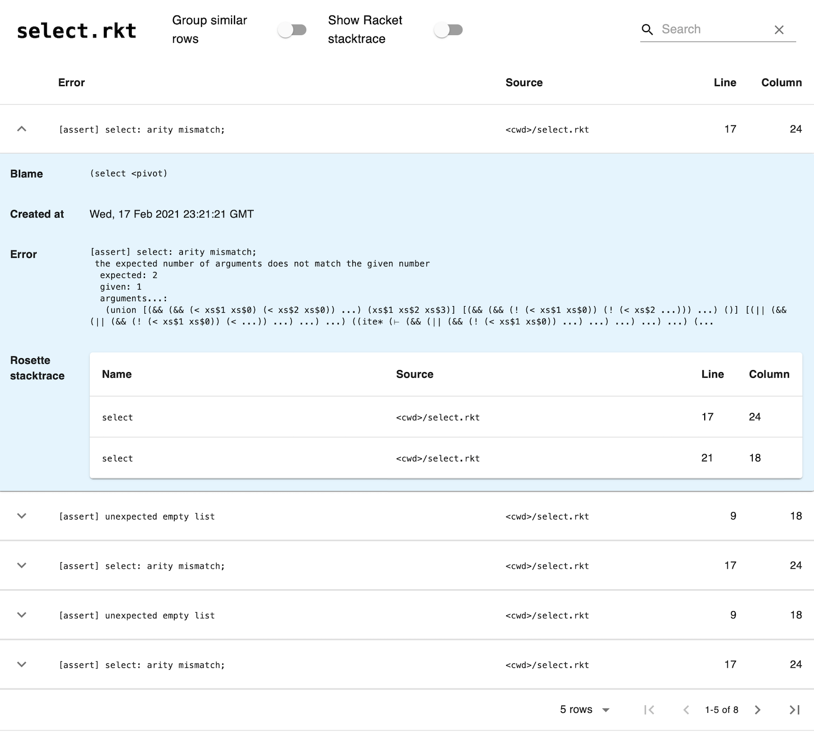

10 Debugging
Bugs in Rosette programs often manifest as runtime exceptions. For example, calling a procedure with too few arguments will cause a runtime exception in Rosette, just as it would in Racket. But unlike Racket, Rosette treats exceptions as assertion failures: it catches the exception, updates the verification condition to reflect the failure, and proceeds with symbolic evaluation. This treatment of exceptions ensures that the program’s solver-aided queries correctly return a sat? or unsat? solution, but it can also make solver-aided code tricky to debug. This chapter describes common problems that are due to intercepted exceptions, how to test for them, and how to find them with the symtrace tool for error tracing.
10.1 Common Bugs in Solver-Aided Code
Rosette intercepts exceptions in two places: within solver-aided queries and within conditional expressions. When converted to assertion failures, these exceptions can lead to unexpected query results, as well as subtle logical errors with no obvious manifestation. We illustrate both kinds of problems next and show how to test for them.
10.1.1 Bugs Due to Exceptions in Solver-Aided Queries
When an exception is intercepted within a solver-aided query, the query will often produce an unexpected result: a model when we expect unsat, and vice versa.
As an example, consider the following verification query, which tries to prove that the sum of a list of integers remains the same when all zeros are removed from the list:
> (define-symbolic xs integer? #:length 4) > (define (sum xs) (foldl + xs)) ; bug: missing 0 after + > (verify (assert (= (sum xs) (sum (filter-not zero? xs))))) (model)
Because we expect this property to hold, we expect the query to return unsat. Instead, it returns the empty model.
To see why, note that the sum procedure contains a simple bug. We forgot to provide the initial value of 0 to foldl, so foldl is called with too few arguments. This omission will cause every call to sum to raise an exception, including (sum xs) in the body of our query. Rosette intercepts this exception and adds #f to the query’s verification condition because the exception happens unconditionally (on all paths). This false assertion then causes the query to return a trivial counterexample, (model), indicating that any binding of xs to concrete integers leads to an error.
As another example, consider the following synthesis query involving sum:
> (define-symbolic opt boolean?)
> (synthesize #:forall xs #:guarantee (assert (= (sum xs) (apply (if opt + -) xs)))) (unsat)
Here, the expected result is a model that binds opt to the value #t, and this is the outcome we see once we fix the bug in sum. The bug, however, causes the #:guarantee expression to fail unconditionally. Rosette then intercepts the exception and returns (unsat) to indicate that no choice of opt can satisfy the specification.
Bugs of this kind can be found through testing. A good test suite should check that queries produce expected results on small inputs, and that query parts do not throw exceptions. When possible, it is also good practice to test all solver-aided code against concrete inputs and outputs. Here is an example test suite for our first query that includes all of these checks:
(require rackunit) (define (post xs) (assert (= (sum xs) (sum (filter-not zero? xs))))) (define (query xs) (verify (post xs))) (define example-tests (test-suite "An example suite for a sum query." #:before clear-vc! #:after clear-vc! (test-case "Test sum with concrete values." (check = (sum '()) 0) (check = (sum '(-1)) -1) (check = (sum '(-2 2)) 0) (check = (sum '(-1 0 3)) 2)) (test-case "Test query post for exceptions." (before (clear-vc!) (check-not-exn (thunk (post xs))))) (test-case "Test query outcome." (before (clear-vc!) (check-pred unsat? (query xs))))))
> (run-test example-tests) (#<test-error> #<test-failure> #<test-failure>)
All tests in this suite fail when invoked on the buggy sum, and they all pass once the bug is fixed.
10.1.2 Bugs Due to Exceptions in Conditionals
As we saw above, basic tests can easily uncover problems
caused by exceptions that are raised unconditionally, on all
paths. This is not surprising since such problems are also
easy to discover in concrete code—
> (define (sum xs) (cond [(null? xs) 0] [(null? (cdr xs)) (car xs)] [(andmap (curry = (car xs)) (cdr xs)) (* (length xs) (cdr xs))] ; Bug: cdr should be car. [else (apply + xs)]))
This version of sum implements three simple optimizations. It returns 0 when given an empty list; xs[0] when given a list of length 1; and |xs| * xs[0] when given a list of identical elements. This last optimization is buggy (it uses cdr when it should have used car), and any execution path that goes through it will end with an exception.
Suppose that we want to verify another simple property of sum: if it returns a positive integer, then at least one element in the argument list must have been positive.
> (assume (positive? (sum xs)))
> (verify (assert (ormap positive? xs))) (unsat)
This query returns (unsat), as expected, despite the bug in sum. To see why, recall that (verify expr) searches for an input that violates an assertion in expr, while satisfying all the assumptions and assertions accumulated in the verification condition (vc) before the call to verify. So, our query is unsat? because (ormap positive? xs) holds whenever (sum xs) successfully computes a positive value.
A basic test suite, adapted from the previous section, will not uncover this bug. If we run the tests against the new sum, all the checks pass:
(define (pre xs) (assume (positive? (sum xs)))) (define (post xs) (assert (ormap positive? xs))) (define (query xs) (pre xs) (verify (post xs))) (define example-tests (test-suite "An example suite for a sum query." #:before clear-vc! #:after clear-vc! (test-case "Test sum with concrete values." (check = (sum '()) 0) (check = (sum '(-1)) -1) (check = (sum '(-2 2)) 0) (check = (sum '(-1 0 3)) 2)) (test-case "Test query post for exceptions." (before (clear-vc!) (check-not-exn (thunk (pre xs))))) (test-case "Test query post for exceptions." (before (clear-vc!) (check-not-exn (thunk (post xs))))) (test-case "Test query outcome." (before (clear-vc!) (check-pred unsat? (query xs))))))
> (run-test example-tests) (#<test-success> #<test-success> #<test-success> #<test-success>)
One way to detect bugs of this kind is to run a "unit verification query" for each key procedure in the program, searching for assertion failures where none are expected:
> (test-case "Test sum for any failures." (check-pred unsat? (verify (sum xs))))
--------------------
Test sum for any failures.
FAILURE
name: check-pred
location: eval:20:0
params:
'(#<procedure:unsat?> (model
[xs$0 0]
[xs$1 0]
[xs$2 0]
[xs$3 0]))
--------------------
> (verify (begin (assume (positive? (sum xs))) (assert (ormap positive? xs))))
(model
[xs$0 1]
[xs$1 1]
[xs$2 1]
[xs$3 1])
But neither strategy is always possible, or foolproof, for large programs. So, in addition to testing, we recommend debugging all important queries with error tracing.
10.2 Error Tracer
To help debug solver-aided code, Rosette provides an error tracer that tracks and displays all exceptions raised during symbolic evaluation. Some of these exceptions are due to bugs and some are intentional, especially in the context of synthesis queries. It is not possible to automatically distinguish between these two, so the error tracer leaves that task to the programmer.
To run the error tracer on a program file ‹prog›, use the raco command:
raco symtrace ‹prog›
The error tracer will open a web browser and stream all exceptions that Rosette intercepted. For instance, here is the output from the error tracer when running our last query on the buggy sum example from the previous section:
(assume (positive? (sum xs)))
(verify (assert (ormap positive? xs))) (unsat)

The output shows a table of exceptions that Rosette intercepted; here, there is one only exception, which is caused by our bug, so there is only one row. Each row consists of a shorter error message and an error location (source file, line, and column). All rows can be expanded to show more details: the full error message, the stack trace, and the erroring (blamed) expression.
10.2.1 Options and Caveats
By default, the error tracer instruments only code that is within a module with either rosette or rosette/safe as its initial path. This default is inherited from the symbolic profiler, and it means that only files beginning with #lang rosette or #lang rosette/safe will be instrumented. The shown call stacks and expressions will not include non-instrumented files. To instrument all code, use the --racket flag described below.
Similarly, by default, the error tracer instruments only code that does not belong to installed packages. To instrument given installed packages, use the --pkg flag described below.
--module ‹module-name› —
run the specified ‹module-name› submodule of ‹prog› (defaults to the main submodule). --racket —
instrument code in any language, not just those derived from Rosette. --assert —
do not show exceptions due to assertion errors, which are usually expected exceptions. --pkg ‹pkg-name› —
instrument code in ‹pkg-name›.
The Group similar rows switch will heuristically group similar rows together, enabling easier navigation when many exceptions originate from the same place and due to the same cause.
The Show Racket stacktrace switch will display the top 32 entries of the Racket stack trace in addition to the Rosette stack trace. The Racket stack trace includes the details of evaluating Rosette’s internal procedures, which the Rosette trace omits. These details are usually not necessary for understanding errors in Rosette code, so the switch is off by default.
The search box can be used to find rows that include the search string in their error message.
10.3 Walkthrough: Tracing Errors in Rosette
To illustrate a typical error tracing process, consider verifying the following buggy implementation of the quickselect algorithm.
(define (select xs n) (cond [(empty? xs) (assert #f "unexpected empty list")] [else (define pivot (first xs)) (define non-pivot (rest xs)) (define <pivot (filter (λ (x) (< x pivot)) non-pivot)) (define >=pivot (filter (λ (x) (>= x pivot)) non-pivot)) (define len< (length <pivot)) (cond [(= n len<) pivot] [(< n len<) (select <pivot)] ; Bug: should be (select <pivot n). [else (select >=pivot (- n len< 1))])])) (define-symbolic n k integer?)
(assume (and (<= 0 n (sub1 (length xs))) (= k (select xs n))))
(verify (assert (= k (list-ref (sort xs <) n)))) (unsat)
As before, the verification query succeeds despite the bug. But unlike before, the bug is harder to detect. So we run the error tracer on it and obtain the following output:

The output from the error tracer includes 8 exceptions. Four are arity mismatch exceptions that are due to the bug, and the rest are benign assertion failures that cannot happen in our example.
Because benign assertion failures are so common, the error tracer provides an option to heuristically suppress them from the output via the --assert flag. With the flag enabled, the output contains only the four arity mismatch exceptions.
Some assertion failures are bugs, however, so filtering with --assert can end up hiding true positives and should be used with this caveat in mind.